1 Spatial Data Analysis


Access, Import, and Primary Analyses with Environmental Data in R
Date Modified: February 1, 2024
Authors: Mitchell Manware  , Kyle P Messier
, Kyle P Messier 
Key Terms: Geospatial Data
Programming Language: R
1.1 Introduction
1.1.1 Motivation
Environmental health research relies on various types of data to accurately measure, model, and predict exposures. Environmental data are often spatial (related to the surface of the Earth), temporal (related to specific time/period of time), or spatio-temporal (related to the surface of the Earth for a specific time/period of time). These data are at the core of environmental health research, but the steps between identifying a spatial data set or variable and using it to help answer a research question can be challenging.
This vignette is designed to introduce the necessary steps for conducting analyses with spatial data in R. It will introduce R packages that are equipped to handle spatial data, and will demonstrate how to access, import, and analyze three different types of spatial data. The vignette will focus primarily on spatial data, but some aspects of temporal and spatio-temporal data will also be discussed.
1.1.2 Objectives
Users will learn about the following topics related to spatial data in R:
- Point, polygon, and raster data types
- Downloading data from a URL
- Importing data
- Checking data type, structure, and class
- Reclassifying data
- Computing summary and zonal statistics
- Plotting individual and multiple data sets
1.1.3 Data Types
This vignette will cover how to access, import, and analyze point, polygon, and raster spatial data types. The details of what constitutes each unique spatial data type, however, will not be covered.
For detailed descriptions of each type of spatial data, please see Simple Features for R for point and polygon data types, and Introduction to Raster Data for raster data.
1.1.4 Data Sources
The exploratory analyses performed in this vignette utilize free and publicly available environmental data. The code chunks are designed to access each specific file used for the exploratory analyses, but a description of each data source and data set is available below.
| Data | Data Type | Producer | Link |
|---|---|---|---|
| PM2.5 Daily Observations | Point | Environmental Protection Agency (EPA) | https://aqs.epa.gov/aqsweb/airdata/download_files.html |
| Wildfire Smoke Plumes | Polygon | National Oceanic and Atmospheric Administration (NOAA) | https://www.ospo.noaa.gov/Products/land/hms.html |
| United States Cartographic Boundary | Polygon | United States Census Bureau | https://www.census.gov/geographies/mapping-files/time-series/geo/carto-boundary-file.html |
| Land Surface Temperature | Raster | National Oceanic and Atmospheric Administration (NOAA) | https://psl.noaa.gov/data/gridded/data.narr.html |
1.1.5 Packages
Various R packages can be used to create, import, analyze, and export spatial data. If you have not used these packages previously, they may not be installed on your machine. The following chunk of code installs and imports the packages required to conduct the exploratory analyses in this vignette.
Installing and importing new packages may required R to restart.
vignette_packages <- c(
"dplyr", "ggplot2", "ggpubr", "sf",
"terra", "tidyterra", "utils"
)
for (v in seq_along(vignette_packages)) {
if (vignette_packages[v] %in% installed.packages() == FALSE) {
install.packages(vignette_packages[v])
}
}
library(dplyr)
library(ggplot2)
library(ggpubr)
library(sf)
library(terra)
library(tidyterra)
library(utils)ggplot2 and ggpubr
The ggplot2 and ggpubr packages will be used throughout the vignette for creating publication quality plots. Please see ggplot2: Elegant Graphics for Data Analysis (3e) and ggpubr: ‘ggplot2’ Based Publication Ready Plots for in depth descriptions of the syntax and functionality utilized by these packages.
The exploratory analyses performed in this vignette are designed for educational purposes only. The results of the following analyses are not peer-reviewed findings, nor are they based on any hypotheses.
1.2 Point Data with sf
Air pollution monitoring data from the United States Environmental Protection Agency (EPA) will be used to demonstrate using point data with the sf package.
1.2.1 Access, download, and unzip
To download data with the utils::download.file() function, define two variables. One variable to store the website URL where the data exists and a second to store the file path for where the file should be saved.
Multiple chunks of code in this vignette will contain / YOUR FILE PATH /. To run the code on your machine, substitute / YOUR FILE PATH / with the file path where you would like to store the vignette data.
url_epa <- "https://aqs.epa.gov/aqsweb/airdata/daily_88101_2021.zip"
destination_epa <- "/ YOUR FILE PATH /epa_data.zip"
download.file(
url_epa,
destination_epa
)The file downloaded from the EPA website is a zip file. Zip files need to be unzipped (decompressed) in order to access the data within. Unzip the EPA air pollution file with utils::unzip().
Unzipping a .zip file will decompress the contents within. Spatial data sets can be very large (ie. > 1GB ), so check the size of the data before unzipping on your machine.
The numeric value size of the file is listed under Length.
After inspecting the file size, unzip epa_data.zip.
Inspecting the file with utils::unzip(list = TRUE) returned the size of the file, but also the name of the data file of interest. The desired data file can also be identified with list.files().
Other file names may be returned if / YOUR FILE PATH / is a directory with other contents (ie. Desktop or Documents).
1.2.2 Import
Now that the contents of the zip file have been saved on your machine and the data file of interest has been identified, import the data with sf::st_read().
The previous chunk of code returned a Warning: message. This warning informs the user that the imported data does not have native spatial features, so the data was imported as a data.frame.
1.2.3 Inspect structure
Inspect the structure of pm to see its class, column names, column classes, and the first two (specified by vec.len = 2) data points from each column.
1.2.4 Subset
Checking the data’s structure shows that pm is a very large data set. Each of the variables convey important information related to air pollution monitoring, but not all will be utilized in these exploratory analyses.
The data set can be reduced to include only the variables of interest with the subset() function. The select = argument indicates which variables to be retained in the new data set.
pm <- subset(pm, select = c(
State.Code,
County.Code,
Site.Num,
Latitude,
Longitude,
State.Name,
Date.Local,
Arithmetic.Mean
))Re-running str(pm) after subsetting the data set shows that all all observations (n = 590208) of the variables of interest (n = 8) have been retained.
1.2.5 Reclassify
The str() function showed the class of each variable within the data set. All of the retained variables are of class character, indicated by : chr and the quotations around each observation ("01" "01" ...).
The class of a variable depends on the information conveyed by the data stored within that variable. For example, character is an appropriate class for the pm$State.Name variable because each observation is a character string labeling in which state the monitor was located. Alternatively, character is not appropriate for the pm$Arithmetic.Mean or pm$Date.Local variables because each observation is a numeric decimal or time-referenced date, respectively.
The as. functions can be used for reclassifying data. Reclassify pm$Arithmetic.Mean as a number, and pm$Date.Local as a date.
After running the as. functions, ensure that the two variables have been reclassified to the desired classes.
1.2.6 Convert to sf object
With the variables of interest selected and reclassified, pm can be converted to spatially defined sf object. The sf::st_as_sf() function creates a $geometry field based on the latitude and longitude coordinates contained within pm. The coords = c() argument specifies the column names which contain the coordinate values.
The columns containing coordinate values will not always be “Latitude” and “Longitude”. Use str() to see column names and identify which contain the coordinate values.
Inspect the classes of pm_sf and pm_sf$geometry to see their differences, and how each are different than class(pm).
class(pm_sf) returned both "sf" and "data.frame", indicating that it contains both spatial and non-spatial data.
1.2.7 Coordinate reference system and projection
The coordinate reference system of an sf object can be checked with sf::st_crs().
The previous chunk of code shows that pm_sf does not have a native coordinate reference system. The same function, sf::st_crs(), can be used to assign a coordinate reference system to an sf object. For this example, the World Geodesic System 1984 (WGS 84) will be used (EPSG code: 4326).
An sf object with a coordinate reference system can be transformed (projected) into a different coordinate reference system with sf::st_transform(). The area of interest for these exploratory analyses is the coterminous United States, so the Albers Equal Area projected coordinate system will be used (EPSG code: 5070). For a detailed description of coordinate reference systems, and how to select the best system for your analyses, see Coordinate Reference Systems.
An sf object without an assigned coordinate reference system cannot be transformed. sf::st_crs() must be used to assign a coordinate reference system to an sf object that does not have one.
1.2.8 Plot
Plotting spatial data is important for visualizing and analyzing patterns in the data. Initialize a plot for the locations of each air pollution monitoring station with ggplot2::ggplot(). Identifying the data set to be plotted within the geom_sf() argument informs the function that the data is an sf object.
ggplot() +
geom_sf(data = pm_sf) +
ggtitle("Air Pollution Monitor Locations") +
theme_pubr() +
theme(plot.title = element_text(hjust = 0.5)) +
grids()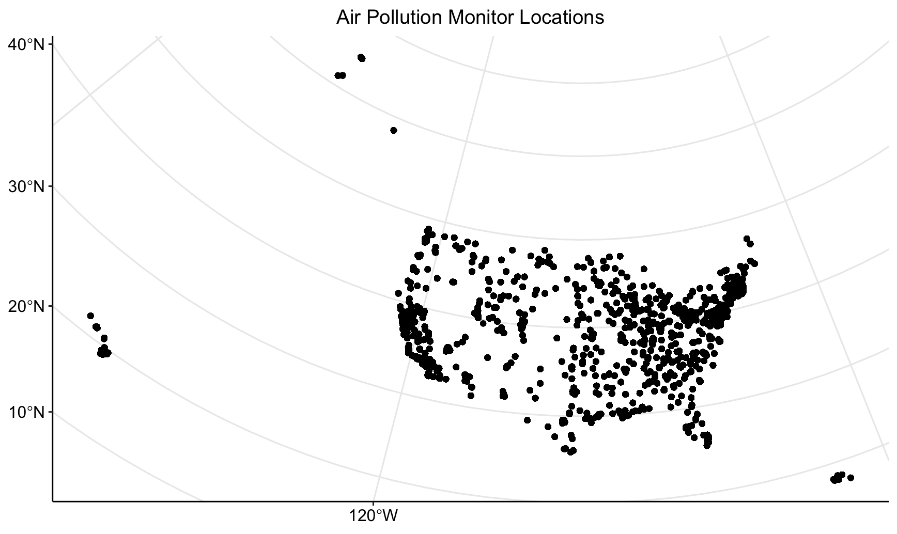
The plot shows the distribution of monitoring locations, and roughly depicts the outline of the United States due to the large number of monitors. The plot does not, however, convey any information about the concentration of PM2.5 measured by each monitor. Inspect the summary statistics of the PM2.5 measurements before creating any plots to visualize the data.
After inspecting the summary statistics, create a histogram of the PM2.5 concentration measurements to visualize the distribution of the data.
The histogram is not a spatially defined plot, so the data set to be plotted is identified within ggplot().
ggplot(
data = pm_sf,
aes(Arithmetic.Mean)
) +
geom_histogram(
fill = "blue",
binwidth = 5
) +
ggtitle(
expression("PM"[2.5] * " Concentration Measurements")
) +
xlab(expression("PM"[2.5] * " Concentration (µg/m"^3 * ")")) +
ylab("Number of Measurements") +
theme_pubr() +
theme(plot.title = element_text(hjust = 0.5)) +
grids()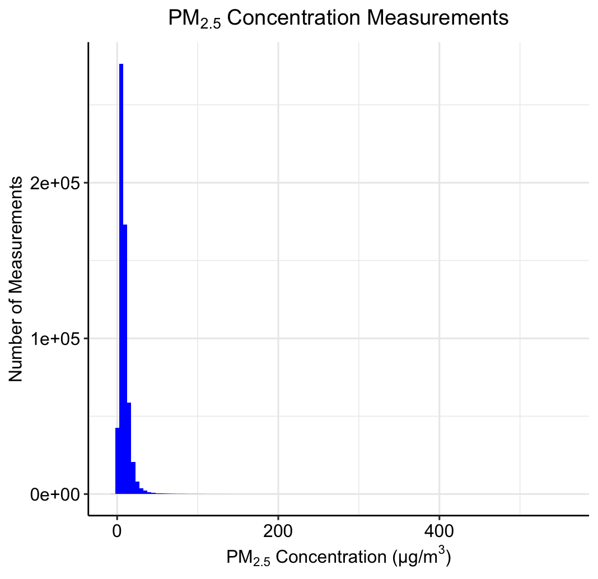
1.2.9 Calculate annual mean
A common summary statistic of interest to researchers is the mean over a certain period of time. For this example, we will calculate the mean PM2.5 concentration for each monitoring location for the year 2021. To do this, a unique identification code must be created for each monitoring location.
The pm_sf$Monitor.ID variable can be created by concatenating each monitor’s state code, county code, and site number together into a single character string.
Each unique monitor identification code should be matched with a unique monitor location geometry. To ensure that each monitor location has a unique identification code, check that there are an equal number of unique geometries and identification codes.
Now that each monitor location as a unique identification code, we can calculate the mean PM2.5 concentration measured at each monitoring location. Functions and syntax from the dplyr package will be used to do this. For more on the dplyr package, please see Introduction to dplyr.
The group_by(Monitor.ID, ) argument specifies that an annual mean should be calculated for each unique Monitor.ID. Including State.Name in this argument retains the column in the new pm_mean data set, but does not influence the calculation of the annual mean.
pm_mean <-
pm_sf %>%
group_by(Monitor.ID, State.Name) %>%
summarise(Annual.Mean = mean(Arithmetic.Mean))Inspect the summary statistics of pm_mean.
Create a plot which shows the distribution of monitoring locations, and color each point according to the monitor’s annual mean concentration of PM2.5.
ggplot() +
geom_sf(
data = pm_mean,
aes(color = Annual.Mean)
) +
scale_color_viridis_b(
expression("PM"[2.5] * " Concentration (µg/m"^3 * ")")
) +
ggtitle(
expression("Annual Mean PM"[2.5] * " Concentration")
) +
theme_pubr(legend = "bottom") +
theme(plot.title = element_text(hjust = 0.5)) +
grids()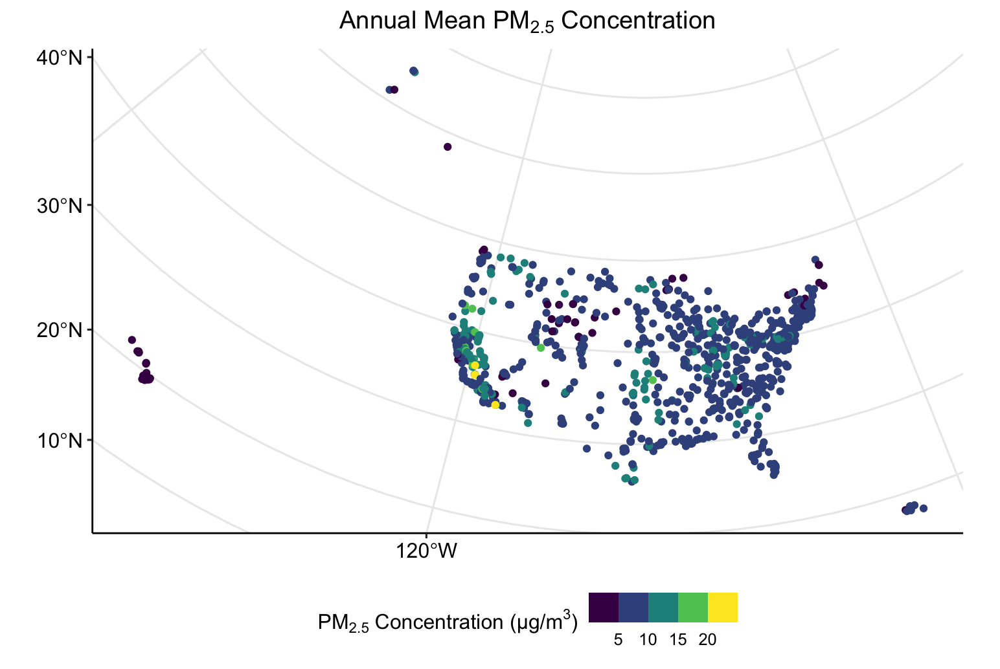
Now the plot depicts both spatial and non-spatial data.
1.2.10 Compare highest annual means
A close visual inspection of the previous plot shows a few monitoring locations in the southwestern region of the United States with very high (> 20 µm/m3) annual mean concentrations of PM2.5. To investigate the differences between the monitors with the highest and lowest annual mean concentrations, create a subset of pm_sf with only the three highest and lowest monitors.
To do this, first identify the monitors with the highest and lowest annual mean concentrations.
min_monitors <-
pm_mean %>%
arrange(Annual.Mean) %>%
head(n = 3)
max_monitors <-
pm_mean %>%
arrange(Annual.Mean) %>%
tail(n = 3)Next, create a variable storing only the unique identification codes of these six monitors.
Finally, subset the pm_sf data set according to the monitor identification codes stored in min_max_monitors_id.
The resulting pm_min_max data set contains data for only six monitoring locations. Check the unique monitor identification codes that constitute the new data set.
The temporal trend of PM2.5 concentrations measured at each of these locations in 2021 can be depicted with ggplot::geom_line().
ggplot(
data = pm_min_max,
aes(
x = Date.Local,
y = Arithmetic.Mean,
group = Monitor.ID,
color = Monitor.ID
)
) +
geom_line() +
ggtitle("Minimum and Maximum Monitors") +
xlab("Date") +
ylab(expression("PM"[2.5] * " Concentrations (µg/m"^3 * ")")) +
theme_pubr(legend = "bottom") +
theme(plot.title = element_text(hjust = 0.5))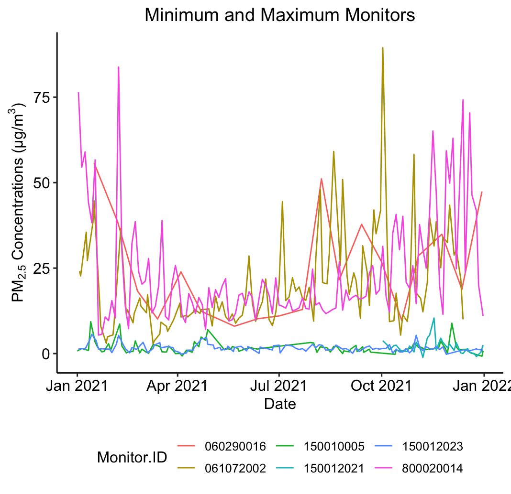
Alternatively, the ggplot2::geom_boxplot() function compares the median, interquartile range, and outliers of the monitors’ measurements.
ggplot(
data = pm_min_max,
aes(
x = Monitor.ID,
y = Arithmetic.Mean,
fill = Monitor.ID
)
) +
geom_boxplot() +
xlab("Monitor ID") +
ylab(expression("PM"[2.5] * " Concentrations (µg/m"^3 * ")")) +
theme_pubr(legend = "none")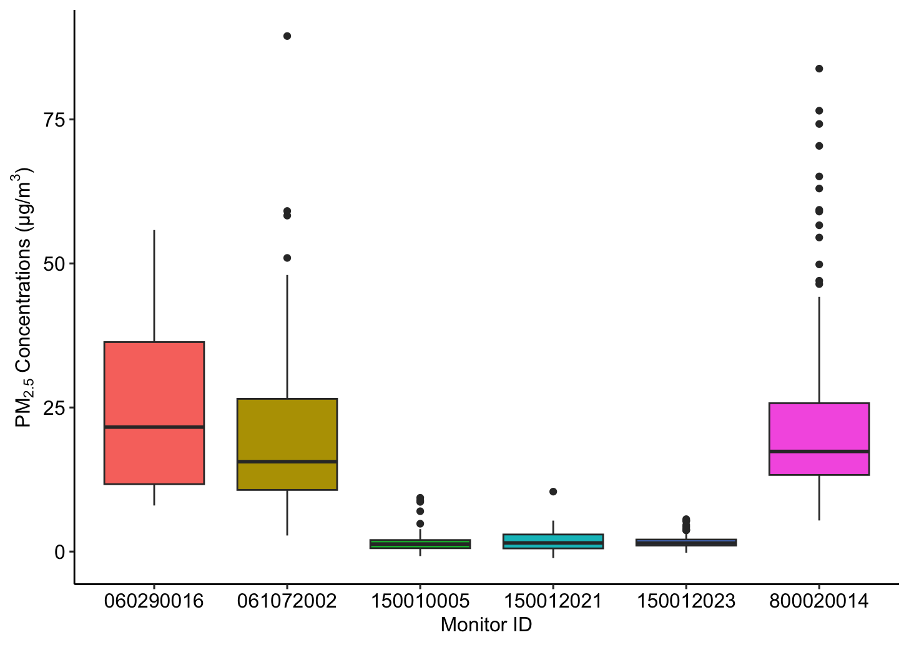
1.3 Polygon Data
Wildfire smoke plume coverage data from the United States National Oceanic and Atmospheric Administration (NOAA) will be used to demonstrate using polygon data. This section will cover polygon data with both the sf and terra packages separately, but the steps for accessing, downloading, and unzipping the data is the same for both packages.
1.3.1 Access, download, and unzip
The website URL where the NOAA wildfire smoke plume data exists is date-specific, meaning there is a unique URL for each daily data set. For the purpose of these exploratory analyses, wildfire smoke plume data from September 1, 2023 will be used.
Define three variables for day, month, and year according to the date of interest.
The utils::download.file() function downloads the file according to the defined URL and destination file.
url_noaa <- paste0(
"https://satepsanone.nesdis.noaa.gov/pub/FIRE/web/HMS/Smoke_Polygons",
"/Shapefile/",
year,
"/",
month,
"/hms_smoke",
year,
month,
day,
".zip"
)
destination_noaa <- paste0(
"/ YOUR FILE PATH /noaa_smoke",
year,
month,
day,
".zip"
)
download.file(
url_noaa,
destination_noaa
)The file downloaded from the NOAA website is a .zip file. Zip files need to be unzipped (decompressed) in order to access the data within. Unzip the NOAA wildfire smoke plume coverage file with utils::unzip().
Unzipping a .zip file will decompress the contents within. Spatial data sets can be very large (ie. > 1GB), so check the size of the data before unzipping on your machine.
The numeric value size of each file is listed under Length.
After inspecting the file sizes, unzip noaa_smoke20230901.zip.
Inspecting the file with utils::unzip(list = TRUE) returned the size of the file, but also the name of the data file of interest. The desired data file can also be identified with list.files().
Listing the contents of the unzipped file reveals four individual files. The data to be imported is stored in the hms_smoke20230901.shp, but the other files contain important information for the .shp file.
Deleting any of the supporting files (ie. *.dbf, *.prj, or *.shx) will disrupt the data import.
1.3.2 Polygon Data with sf
This section will focus on exploratory analyses with polygon data using the sf package.
Import
Now that the contents of the zip file have been saved on your machine and the data file of interest has been identified, import the data with sf::st_read().
Although the supporting files are required to import a shapefile, only the file ending in .shp needs to be imported
Importing hms_smoke20230901.shp does not return a Warning: message because the data set has native spatial features, and is therefore imported as an sf object.
Inspect structure
Inspect the structure of smoke_sf to see its class, column names, column classes, and the first two (specified by vec.len = 2) data points.
As mentioned previously, the smoke_sf data set has native spatial features. These are reflected by the data set having classes of sf and data.frame, and the $geometry feature.
Reclassify
The main parameter of interest in this data set is $Density, which discretely categorizes each wildfire smoke plume as “Light”, “Medium”, or “Heavy”. Checking its class shows that $Density is class character.
Nominal data, data without fixed order or rank system, can be stored as class character (ie. State names). However, it is best to store ordinal data as class factor for conducting analyses in R.
Converting data from class character to class factor can be done with factor(). The levels = c() argument in the function specifies both the level names and the ranked order of the levels.
Check the class of $Density again to ensure proper reclassification.
Coordinate reference system and projection
Check the coordinate reference system of an sf object with sf::st_crs().
smoke_sf has a native coordinate reference system which was imported during the sf::st_read() step. The area of interest for these exploratory analyses is the coterminous United States, so we can transform smoke_sf to the Albers Equal Area projected coordinate system (EPSG code: 5070).
Plot (single)
With the data prepared, plot the wildfire smoke plume polygons with ggplot2::ggplot().
Now that the parameters of interest and coordinate reference system have been prepared, create a plot with ggplot2::ggplot(). Identifying the data set to be plotted within the geom_sf() arguement informs the function that the data is an sf object.
ggplot() +
geom_sf(
data = smoke_sf,
aes(fill = Density)
) +
scale_fill_manual("Smoke Density",
values = c("lightgreen", "lightgoldenrod", "tomato")
) +
ggtitle("Wildfire Smoke Plumes") +
theme_pubr(legend = "bottom") +
theme(plot.title = element_text(hjust = 0.5)) +
grids()The wildfire smoke plume polygons are clearly visible and colored according to their individual smoke density classification. This plot, however, is difficult to interpret for two reasons. First, there are multiple polygons for each smoke density classification. Multiple borders and overlapping polygons with the same smoke density type can be confusing. To make the polygons more clear, individual polygons for each smoke density classification can be combined.
For the purposes of these exploratory analyses, the satellite travelling direction and time of collection will be ignored.
Union
Individual polygons can be unioned (combined) into one multi-part polygon with sf::st_union. The group_by(Density) argument specifies that the polygons should be combined based on the value stored in $Density. Adding the Date = paste0(... argument within the dplyr::summarise() function creates a parameter to store the date based on the year, month, and day of the data (defined in 2.0 Access, download, and unzip).
smoke_sf_density <-
smoke_sf %>%
group_by(Density) %>%
summarise(
geometry = st_union(geometry),
Date = paste0(
year,
month,
day
)
)The resulting data set contains three multi-polygons, a column for the smoke plume classification, and a column for the date.
Creating a new plot with smoke_sf_density.
ggplot() +
geom_sf(
data = smoke_sf_density,
aes(fill = Density)
) +
scale_fill_manual("Smoke Density",
values = c("lightgreen", "lightgoldenrod", "tomato")
) +
ggtitle("Wildfire Smoke Plumes (unioned)") +
theme_pubr(legend = "bottom") +
theme(plot.title = element_text(hjust = 0.5)) +
grids()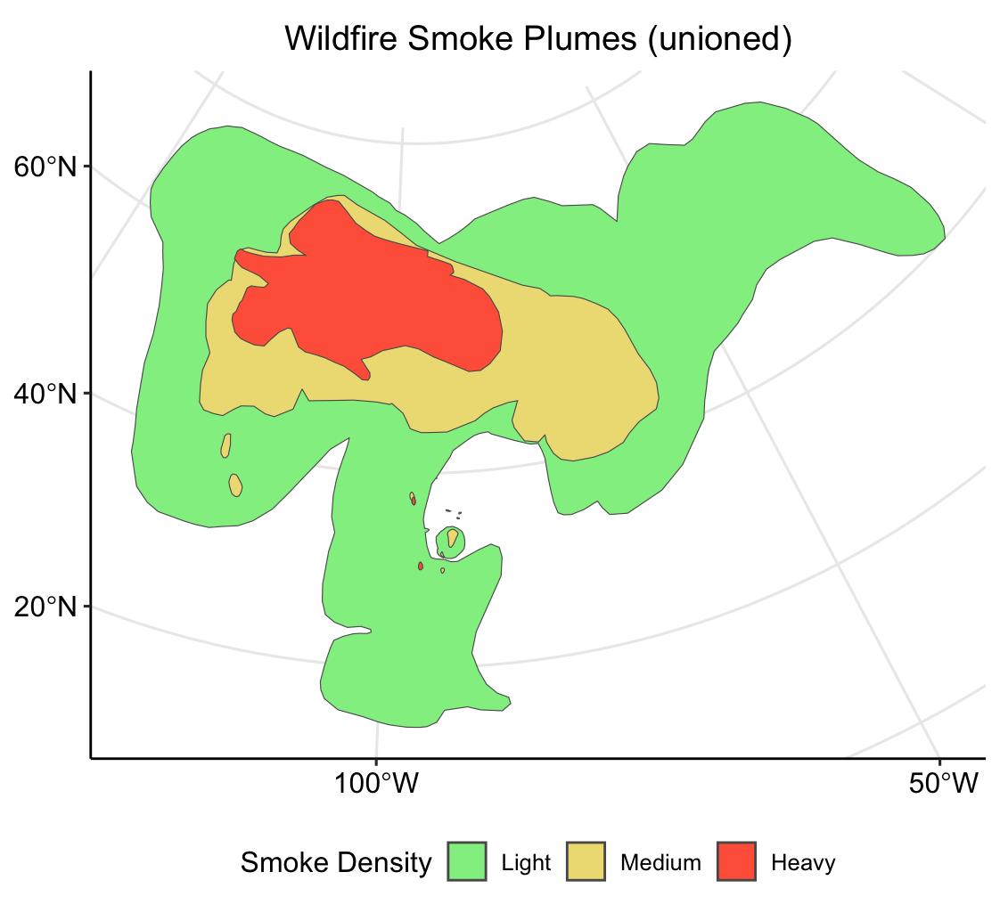
The plot is still difficult to interpret because it lacks geospatial context. The grid lines provide latitude and longitude references, but physical or geopolitical boundaries can help show where the wildfire smoke plumes are relative to the study area of interest. To provide geospatial context to the wildfire smoke plume polygons, we can add the United States’ state boundary polygons to the plot.
Plot (multiple)
The steps taken to access, download, unzip, and import the United States’ state boundary data are the same as those taken for the wildfire smoke plume coverage data. Refer to sections 2.0 Access, download, and unzip, and 2.1.1 Import for detailed descriptions.
url_states <-
"https://www2.census.gov/geo/tiger/GENZ2018/shp/cb_2018_us_state_500k.zip"
destination_states <- "/ YOUR FILE PATH /states.zip"
download.file(
url_states,
destination_states
)Inspect the structure of states_sf.
For the purpose of these exploratory analyses, only the coterminous (CONUS) United States will be used. Subset states_sf to remove Alaska, Hawaii, and the United States’ territories.
remove <- c(
"Alaska",
"Hawaii",
"Puerto Rico",
"United States Virgin Islands",
"Commonwealth of the Northern Mariana Islands",
"Guam",
"American Samoa"
)
conus_sf <- subset(
states_sf,
!NAME %in% remove
)Check the coordinate reference system.
When analyzing multiple spatial data sets together, all data sets must have the same coordinate reference system or projected coordinate system.
Transform conus_sf to match the projected coordinate system of the smoke_sf_density data set.
Plot the coterminous United States’s state boundaries.
ggplot() +
geom_sf(data = conus_sf) +
ggtitle("Coterminous United States' State Boundaries") +
theme_pubr() +
theme(plot.title = element_text(hjust = 0.5)) +
grids()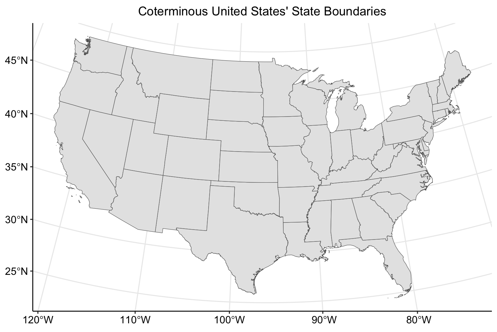
With the wildfire smoke plume and coterminous United States polygons imported and prepared, ensure that they have the same coordinate reference system.
Create a plot which shows the distribution of wildfire smoke plumes over the coterminous United States’ state boundaries.
ggplot() +
geom_sf(
data = smoke_sf_density,
aes(fill = Density)
) +
scale_fill_manual("Smoke Density",
values = c("lightgreen", "lightgoldenrod", "tomato")
) +
geom_sf(
data = conus_sf,
fill = "transparent"
) +
ggtitle("Wildfire Smoke Plumes (with states)") +
theme_pubr(legend = "bottom") +
theme(plot.title = element_text(hjust = 0.5)) +
grids()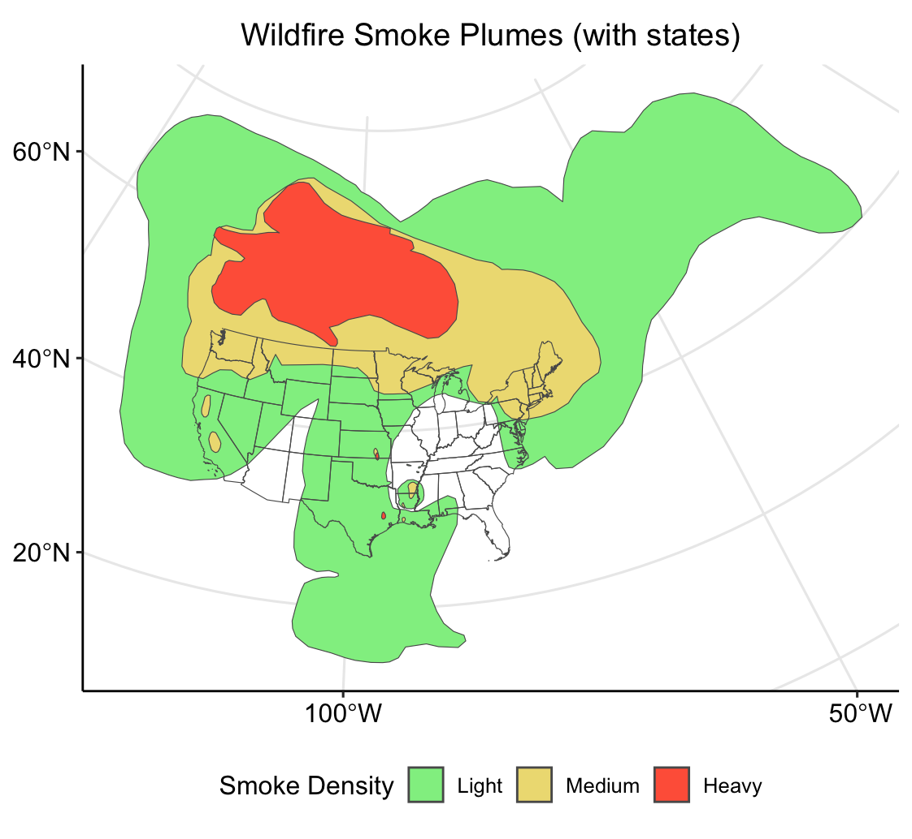
This plot provides important geospatial context for understanding where the wildfire smoke plumes are in relation to the study area of interest.
Crop
The sf::st_crop() function can be used to reduce the extent of a set of polygons to a specific rectangle, typically the bounding box of another spatial data set. In this example we can crop the smoke_sf_density polygons to the bounding box surrounding the coterminous United States.
Plot the cropped wildfire smoke plume polygons and the coterminous United States’ state boundaries.
ggplot() +
geom_sf(
data = smoke_sf_crop,
aes(fill = Density)
) +
scale_fill_manual("Smoke Density",
values = c("lightgreen", "lightgoldenrod", "tomato")
) +
geom_sf(
data = conus_sf,
fill = "transparent"
) +
ggtitle("Wildfire Smoke Plumes (cropped)") +
theme_pubr(legend = "bottom") +
theme(plot.title = element_text(hjust = 0.5)) +
grids()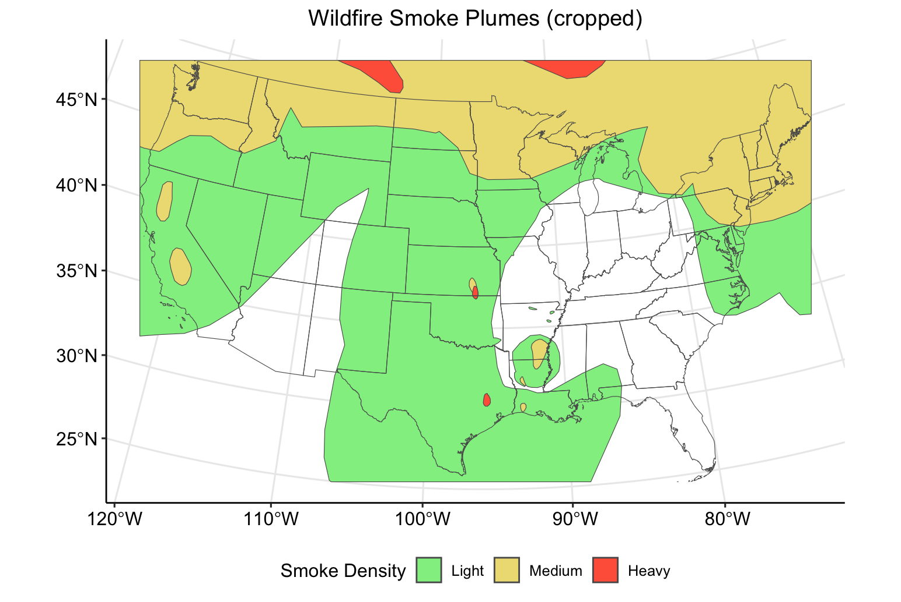
1.3.3 Polygon Data with terra
This section will focus on exploratory analyses with polygon data using the terra package.
Import
Now that the contents of the zip files have been saved on your machine and the data files of interest have been identified, import both the wildfire smoke plume coverage data and the United States’ state boundary data with terra::vect().
See sections 2.0 Access, download, and unzip and 2.1.7 Plot (multiple) for obtaining the wildfire smoke plume coverage and United States’ state boundary data sets, respectively.
Inspect structure
Inspect the structures of smoke_t and states_t to see their classes, column names, column classes.
Both smoke_t and states_t have native spatial features. These are reflected by the type of spatial data in geometry:, and the spatial attributes extent: and coord. ref.:
Reclassify
The main parameter of interest in this data set is $Density, which discretely categorizes each wildfire smoke plume as “Light”, “Medium”, or “Heavy”. Checking its class shows that $Density is class character.
Nominal data, data without fixed order or rank system, can be stored as class character (ie. State names). However, it is best to store ordinal data as class factor for conducting analyses in R.
Converting data from class character to class factor can be done with factor(). The levels = c() argument in the function specifies both the level names and the ranked order of the levels.
Check the class of $Density again to ensure proper reclassification.
For the purpose of these exploratory analyses, only the coterminous (CONUS) United States will be used. Subset states_t to remove Alaska, Hawaii, and the United States’ territories.
Coordinate reference system and projection
Check the coordinate reference systems of SpatVector objects with terra::crs().
Both data sets have native coordinate reference systems which were imported during the terra::vect() step. The two data sets, however, have different coordinate reference systems from each other. The area of interest for these exploratory analyses is the coterminous United States, so we can project smoke_t and conus_t to the Albers Equal Area projected coordinate system (EPSG code: 5070).
Although both data sets were transformed to the same projected coordinate system, it is important to ensure that all data sets have the same coordinate reference system or projected coordinate system.
Plot (multiple)
Plot both data sets together in one plot with ggplot2::ggplot().
Now that the parameters of interest and coordinate reference systems have been prepared, create a plot with ggplot2::ggplot(). Identifying the data sets to be plotted within the geom_spatvector() arguments informs the function that the data are SpatVector objects.
ggplot() +
geom_spatvector(
data = smoke_t,
aes(fill = Density)
) +
scale_fill_manual("Smoke Density",
values = c("lightgreen", "lightgoldenrod", "tomato")
) +
geom_spatvector(
data = conus_t,
fill = "transparent"
) +
ggtitle("Wildfire Smoke Plumes (with states)") +
theme_pubr(legend = "bottom") +
theme(plot.title = element_text(hjust = 0.5)) +
grids()The wildfire smoke plume polygons are clearly visible and colored according to their individual smoke density classification. The plot, however, is difficult to interpret because there are multiple polygons for each smoke density classification. Multiple borders and overlapping polygons with the same smoke density type can be confusing. To make the polygons more clear, individual polygons for each smoke density classification can be combined.
For the purposes of these exploratory analyses, the satellite travelling direction and time of collection will be ignored.
Aggregate
Individual polygons an be aggregated (combined) into one multi-part polygon with terra::aggregate(). The by = "Density" argument specifies that the polygons should be combined based on the value stored in $Density.
Aggregating the polygons based on the values stored in the $Density column can result in the other columns containing NA values. To remove these columns, subset smoke_t_density to remove $Satellite, $Start, and $End.
The resulting data set contains three multi-polygons, a column for the smoke plume classification, and a count of the number of individual polygons that were aggregated to create the multi-polygon. This last column, $agg_n is automatically calculated by the terra::aggregate() function.
Create a new plot with smoke_t_density.
ggplot() +
geom_spatvector(
data = smoke_t_density,
aes(fill = Density)
) +
scale_fill_manual("Smoke Density",
values = c("lightgreen", "lightgoldenrod", "tomato")
) +
geom_spatvector(
data = conus_t,
fill = "transparent"
) +
ggtitle("Wildfire Smoke Plumes (aggregated)") +
theme_pubr(legend = "bottom") +
theme(plot.title = element_text(hjust = 0.5)) +
grids()Crop
The terra::crop() function can be used to reduce SpatVector to an area determined by another SpatVector. In this example, we can crop the smoke_t_density polygons to the coterminous United States’ state boundaries.
Plot the cropped wildfire smoke plume polygons and the coterminous United States’ state boundaries.
ggplot() +
geom_spatvector(
data = smoke_t_crop,
aes(fill = Density)
) +
scale_fill_manual("Smoke Density",
values = c("lightgreen", "lightgoldenrod", "tomato")
) +
geom_spatvector(
data = conus_t,
fill = "transparent"
) +
ggtitle("Wildfire Smoke Plumes (cropped)") +
theme_pubr(legend = "bottom") +
theme(
plot.title = element_text(hjust = 0.5),
axis.line = element_blank(),
axis.ticks = element_blank(),
axis.text = element_blank()
)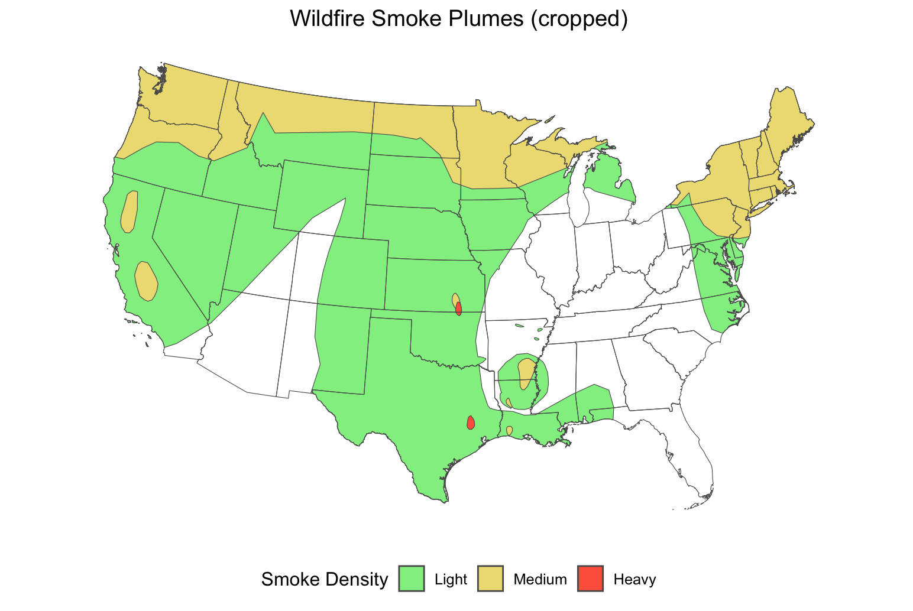
Zonal statistics
Looking closely at the previous plot, it is clear that wildfire smoke plumes cover each state differently. The terra package can be used to identify which states are covered by each classification of wildfire smoke plumes.
The terra::relate() function can be used to identify spatial relationships between two SpatVector objects. The relation = "intersects" argument logically identifies if any portion of each state is or is not covered by each of the three wildfire smoke plume classification multi-polygons.
The output of terra::relate() is a wide matrix. The nested data.frame() and t() wrappers convert the output from a wide matrix to a long data frame, which is required to combine the results with the conus_t data set.
Set the column names of conus_smoke to match the smoke density classifications.
The order of the columns in conus_smoke are based on the ordered factor levels in smoke_t_density$Density (see 2.2.3 Reclassify).
Combine the wildfire smoke plume indicator data frame with the the coterminous United States’ state boundaries data.
The conus_t data set now contains separate columns indicating the presence or absence of “Light”, “Medium”, and “Heavy” wildfire smoke plumes for each coterminous state.
Plot (for Loop)
A for loop can be used to create indicator plots for each wildfire smoke plume classification. The layout of a for loop can look complicated, but it simply applies the same set of functions to a given list of inputs.
The list of inputs must first be created. As the goal is to plot each of the wildfire smoke plume density classifications, create a character vector of the three classification names.
This “list of inputs” must first be created. Store the three wildfire smoke plume classifications in a vector of class character.
Create a for loop that creates a plot for each wildfire smoke plume density stored within dens_c.
Code line 1 tells the for loop to apply the following functions to each observation in dens_c.
Code lines 3 through 9 define the plotting colors based on the wildfire smoke plume classification (dens_c[d]). As in previous plots, “Light” smoke plumes will be colored green, “Medium” smoke plumes will be covered yellow, and “Heavy” smoke plumes will be colored red.
Code lines 12 through 32 create the plot based on the wildfire smoke plume classification (dens_c[d]), and previously defined plotting colors (color_values).
for (d in seq_along(dens_c)) {
# define color palette based on smoke density
if (dens_c[d] == "Light") {
color_values <- c("lightgrey", "lightgreen")
} else if (dens_c[d] == "Medium") {
color_values <- c("lightgrey", "lightgoldenrod")
} else if (dens_c[d] == "Heavy") {
color_values <- c("lightgrey", "tomato")
}
# create plot
print(
ggplot() +
geom_spatvector(
data = conus_t,
aes_string(fill = dens_c[d])
) +
scale_fill_manual(
paste0(
dens_c[d],
" Smoke Plume Coverage Present"
),
values = color_values
) +
theme_pubr(legend = "bottom") +
theme(
plot.title = element_text(hjust = 0.5),
axis.line = element_blank(),
axis.ticks = element_blank(),
axis.text = element_blank()
)
)
}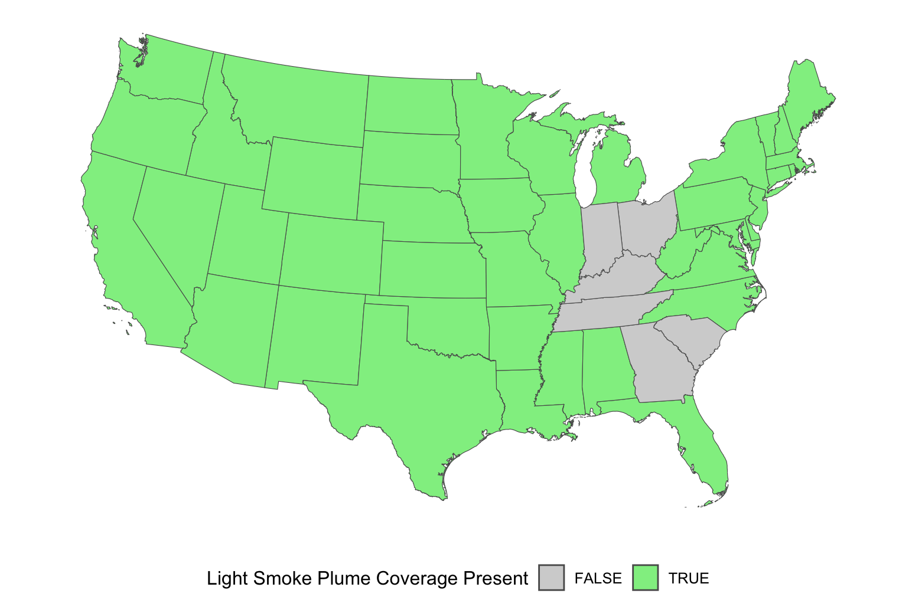
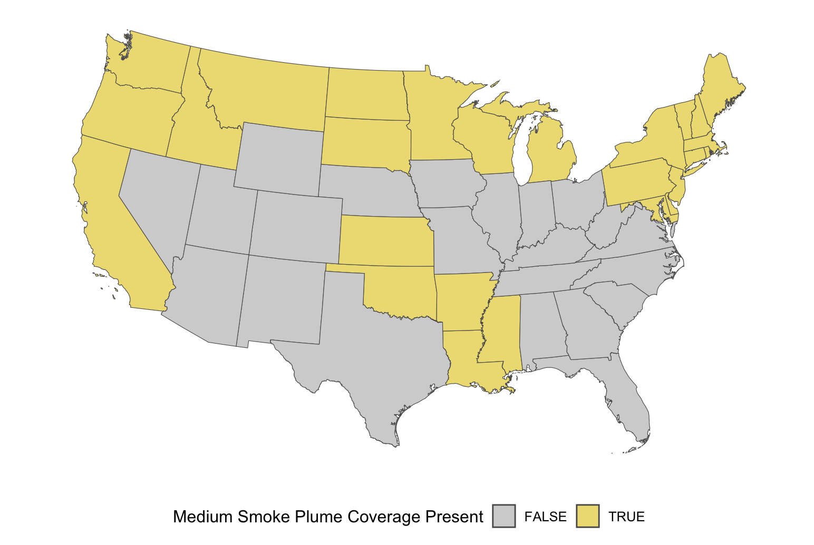
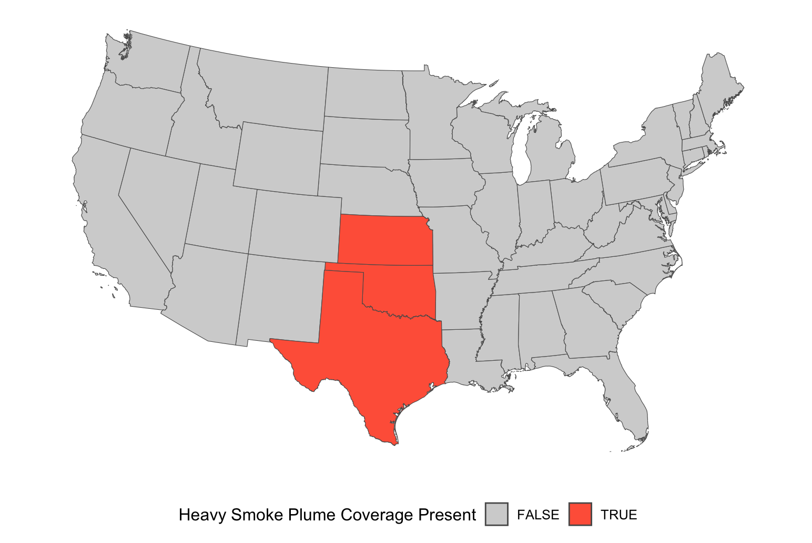
1.4 Raster Data with terra
Air temperature data from the United States National Oceanic and Atmospheric Administration’s (NOAA) North American Regional Reanalysis (NARR) data set will be used to demonstrate using raster data with the terra package.
1.4.1 Access and download
The website URL where the NOAA NARR exists is year-specific, meaning there is a unique URL for each annual data set. For the purpose of these exploratory analyses, air temperature data from the year 2021 will be used
Define the variable year according to the year of interest.
The utils::download.file() function downloads the file according to the defined URL and destination file.
# specify the URL where data is stored based on year variable of interest
url_narr <- paste0(
"https://downloads.psl.noaa.gov//Datasets/NARR/Dailies/monolevel/air.2m.",
year,
".nc"
)
# specify where to save downloaded data
destination_narr <- paste0(
"/ YOUR FILE PATH /narr_air2m_",
year,
".nc"
)
# download the data
download.file(
url_narr,
destination_narr
)Identify the desired data file with utils::list.files()
The file downloaded from NOAA’s NARR data set is an .nc, or netCDF, file. NetCDF files are common for raster data, and do not need to be unzipped.
1.4.2 Import
Now that the data file of interest has been downloaded and identified, import the data with terra::rast().
1.4.3 Inspect structure
Inspect the structure of narr to see its class, dimensions, variables, and layer names.
When working with raster data, the dimensions of the raster refer to the number of rows (nrow) and columns (ncol) of grid cells that make up the raster. Similarly, the number of layers in the raster object (nlyr) represents the number of observations of the data. These can also be inspected individually with nrow(), ncol(), and nlyr(), respectively.
1.4.4 Rename
The narr data set contains 365 layers, one for each daily observation of air temperature in 2021. When working with raster data that contains multiple layers, it is important to know and recognize the naming structure of each layer. In this case, the layer names are air_ followed by the day of the year (ie. January 1 = air_1).
Renaming raster layers can be useful for calculating summary statistics or when combining rasters with potentially identical layer names. Using the time() and gsub() functions, the layers can be renamed according to their date.
Check the layer names again to ensure proper renaming.
1.4.5 Coordinate reference system and projection
Check the coordinate reference system of a SpatRaster object with terra::crs().
narr has a native coordinate reference system, but it is unnamed and was not identifiable by terra::rast(). The area of interest for these exploratory analyses is the coterminous United States, so we can project narr to the Albers Equal Area projected coordinate system (EPSG code: 5070).
We want to create plots with and analyze the air temperature data as it relates to the coterminous United States’ state boundaries. Subset states_t to remove Alaska, Hawaii, and the United States’ territories.
See sections 2.0 Access, download, and unzip and 2.2.1 Import for obtaining the states_t data set.
remove <- c(
"Alaska",
"Hawaii",
"Puerto Rico",
"United States Virgin Islands",
"Commonwealth of the Northern Mariana Islands",
"Guam",
"American Samoa"
)
conus_t <- subset(
states_t,
!states_t$NAME %in% remove
)Project conus_t to the Albers Equal Area projected coordinate system (EPSG code: 5070).
Ensure that both data sets have the same coordinate reference system.
1.4.6 Plot (multiple)
Now that the data sets and coordinate reference systems have been prepared, create a plot with ggplot2::gglot(). Identifying the data sets to be plotted within the geom_spatraster() and geom_spatvector() argument informs the function that the narr and conus_t data sets are SpatRaster and SpatVector objects, respectively.
Only the first layer of the narr data set will be plotted.
ggplot() +
geom_spatraster(data = narr$air_20210101) +
scale_fill_continuous(
type = "viridis",
na.value = NA,
"Temperature (°K)"
) +
ggtitle("Air Temperature") +
geom_spatvector(
data = conus_t,
fill = "transparent",
color = "black"
) +
theme_pubr(legend = "bottom") +
theme(plot.title = element_text(hjust = 0.5)) +
grids()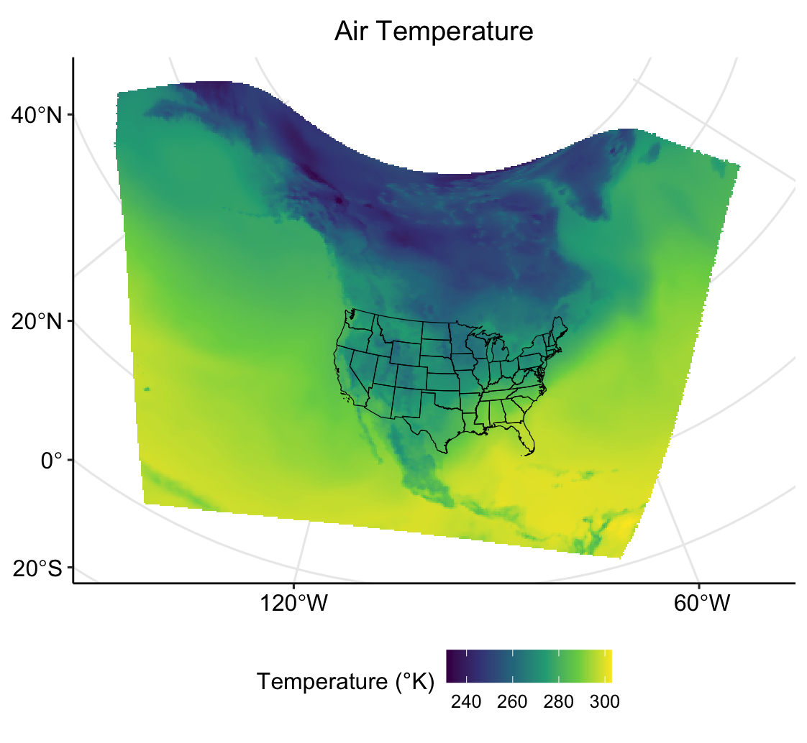
1.4.7 Crop
The terra::crop() function can be used to reduce a SpatRaster to an area determined by SpatVector polygons. The mask = TRUE argument crops to the border of the polygons, whereas mask = FALSE crops to the bounding box surrounding the polygons. In this example, crop the narr data to the coterminous United States’ state boundaries.
Plot the cropped temperature data and the coterminous United States’ state boundaries.
Only the first layer of the narr data set will be plotted.
ggplot() +
geom_spatraster(data = narr_crop$air_20210101) +
scale_fill_continuous(
type = "viridis",
na.value = NA,
"Temperature (°K)"
) +
ggtitle("Air Temperature (cropped)") +
geom_spatvector(
data = conus_t,
fill = "transparent",
color = "black"
) +
theme_pubr(legend = "bottom") +
theme(
plot.title = element_text(hjust = 0.5),
axis.line = element_blank(),
axis.ticks = element_blank(),
axis.text = element_blank()
)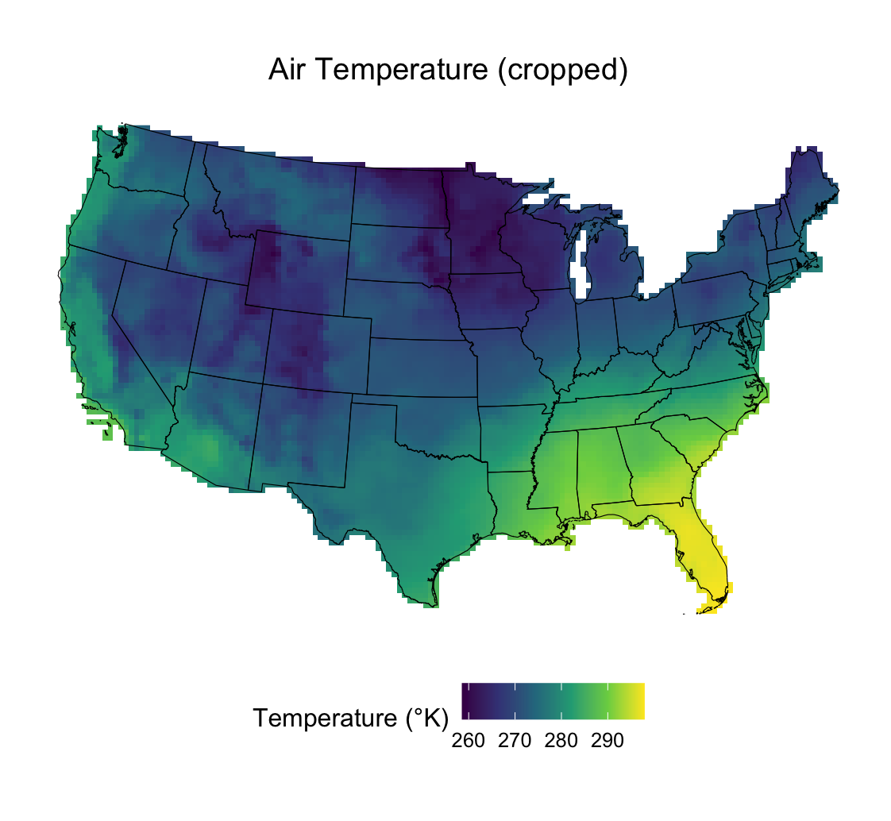
1.4.8 Units
The previous plot depicts the 2m air temperature data in Kelvin. To convert the units to degrees Celsius, simply subtract the values in narr_crop by 273.15. This subtraction will be applied to every grid cell within every layer of narr_crop.
1.4.9 Summary statistics
Similar to mathematical operations, calculating summary statistics is very straight forward with raster data. For this example, calculate the annual mean 2m air temperature and range of 2m air temperatures at each grid cell, and save these as a new layer in narr_crop_c
Inspect the results of the mean and range calculations.
With the summary statistic layers prepared, create a plot with ggplot2::ggplot(). Identifying the data sets to be plotted within the geom_spatraster() and geom_spatvector() argument informs the function that the narr_crop_c and conus_t data sets are SpatRaster and SpatVector objects, respectively. Additionally, the facet_wrap(~lyr) argument creates a plot for each layer specified in geom_spatraster(data = narr_crop_c[[c("mean", "range")]]).
ggplot() +
geom_spatraster(data = narr_crop_c[[c("mean", "range")]]) +
scale_fill_continuous(
type = "viridis",
na.value = NA,
"Temperature (°C)"
) +
facet_wrap(~lyr) +
ggtitle("Air Temperature") +
geom_spatvector(
data = conus_t,
fill = "transparent",
color = "black"
) +
theme_pubr(legend = "bottom") +
theme(
plot.title = element_text(hjust = 0.5),
axis.line = element_blank(),
axis.ticks = element_blank(),
axis.text = element_blank()
)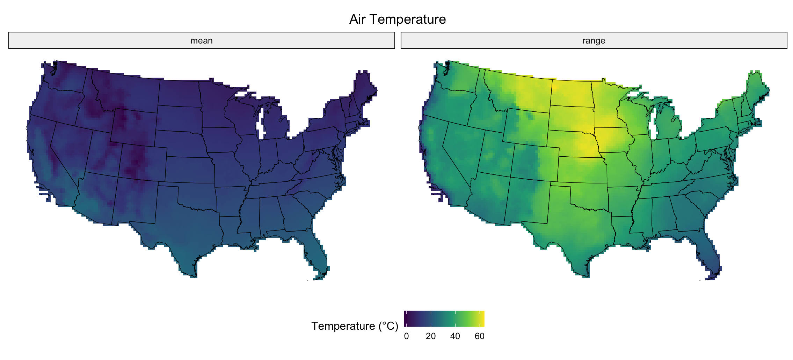
1.4.10 Zonal statistics
Looking closely at the previous plot, it is clear that the annual mean and range of temperatures differ between states. The terra package can be used to calculate zonal statistics of a SpatRaster object based on SpatVector polygons.
The terra::zonal() function can be used to calculate the average annual temperature in each state based on the annual grid cell temperatures stored in narr_crop_c$mean.
Plot the state-specific annual mean temperatures with ggplot2::ggplot(). Identifying the data set to be plotted within geom_spatvector() argument informs the function that the data is a SpatVector object.
ggplot() +
geom_spatvector(
data = conus_t,
aes(fill = MEAN)
) +
scale_fill_continuous(
type = "viridis",
na.value = NA,
"Temperature (°C)"
) +
ggtitle("Air Temperature (state mean)") +
theme_pubr(legend = "bottom") +
theme(
plot.title = element_text(hjust = 0.5),
axis.line = element_blank(),
axis.ticks = element_blank(),
axis.text = element_blank()
)
1.4.11 Reclassify
Raster data is most often continuous numeric data. Sometimes, however, it is important to classify the continuous numeric raster data into discrete classes. For this example, we will reclassify the annual mean temperature data into three discrete classes: <10°C, 10°C - 20°C, >20°C.
The first step in the reclassification process is to create a matrix storing the “from”, “to”, and “becomes” values. As the names imply, the “from” and “to” values identify the discrete ranges to be reclassified, and “becomes” is the new value that data within this range will take (ie. “from” 0 “to” 5 “becomes” 1 means that values ranging from 0 to 5 will be reclassified as 1).
Create the reclassification matrix.
from <- c(
-Inf,
10,
20
)
to <- c(
10,
20,
Inf
)
becomes <- 1:3
reclass <- matrix(
c(
from,
to,
becomes
),
ncol = 3
)Now that the reclassification matrix has been prepared, reclassify the annual mean temperatures. The right = TRUE argument indicates that intervals are open on the left and closed on the right (ie. (0,10] becomes 1).
Although narr_reclass contains the reclassified mean air temperature data, the data is still continuously numeric. The following chunk of code converts the narr_reclass$mean layer from numeric to character based on the defined levels.
narr_reclass contains the reclassified mean air temperature data, but the data is still numeric. The terra::set.cats() function assigns categories to numeric data based on values stored in a data frame.
level_values <- data.frame(
c(1:3),
c("1", "2", "3")
)
colnames(level_values) <- c("mean_continuous", "mean_discrete")
set.cats(narr_reclass,
layer = "mean",
value = level_values
)Plot the discretely reclassified mean temperature data.
ggplot() +
geom_spatraster(data = narr_reclass$mean_discrete) +
scale_fill_viridis_d("",
labels = c(
"≤10°",
"10°< & ≤20°",
"20°<",
""
),
na.value = NA
) +
ggtitle("Air Temperature (reclassified)") +
geom_spatvector(
data = conus_t,
fill = "transparent",
color = "black"
) +
theme_pubr(legend = "bottom") +
theme(
plot.title = element_text(hjust = 0.5),
axis.line = element_blank(),
axis.ticks = element_blank(),
axis.text = element_blank()
)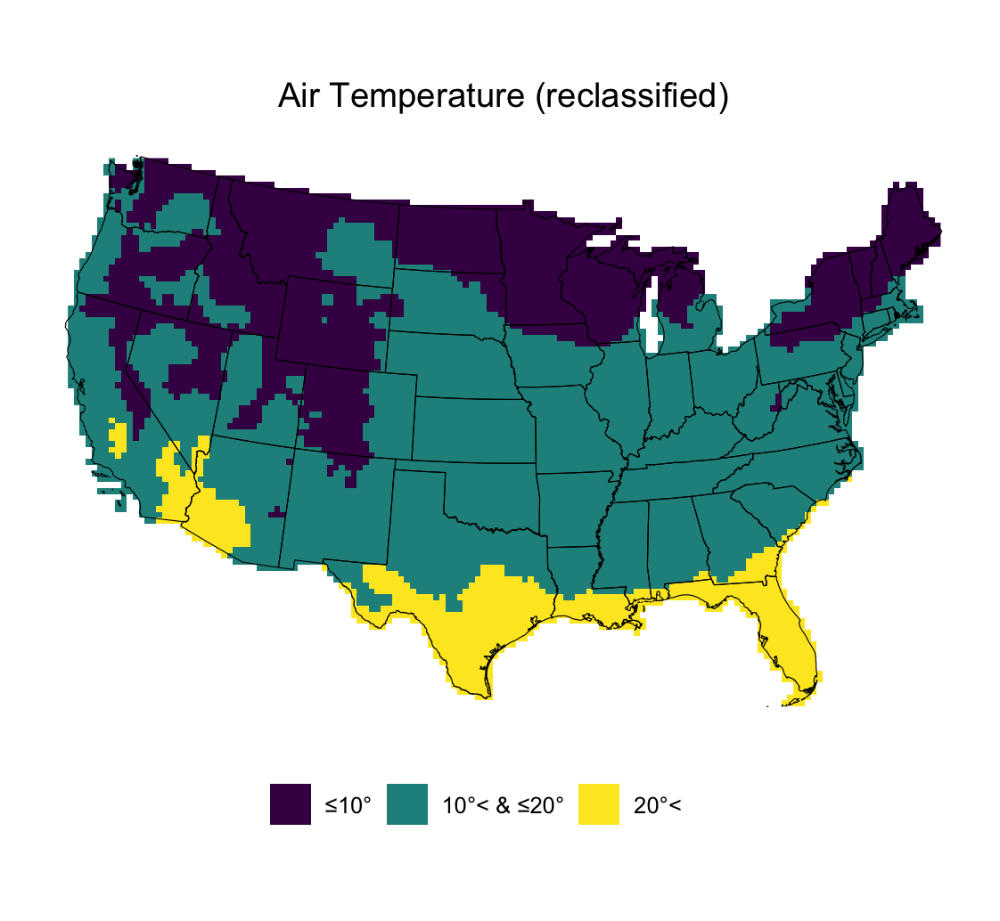
1.5 Additional Resources
For additional resources pertaining to the packages used in this vignette, please see the following:
1.6 References
H. Wickham. ggplot2: Elegant Graphics for Data Analysis. Springer-Verlag New York, 2016.
Hernangomez D (2023). tidyterra: tidyverse Methods and ggplot2 Helpers for terra Objects. https://doi.org/10.5281/zenodo.6572471, https://dieghernan.github.io/tidyterra/
Hijmans R (2023). terra: Spatial Data Analysis. R package version 1.7-39, https://CRAN.R-project.org/package=terra.
Kassambara A (2023). ggpubr: ‘ggplot2’ Based Publication Ready Plots. R package version 0.6.0, https://CRAN.R-project.org/package=ggpubr.
Pebesma, E., & Bivand, R. (2023). Spatial Data Science: With Applications in R. Chapman and Hall/CRC. https://doi.org/10.1201/9780429459016
Pebesma, E., 2018. Simple Features for R: Standardized Support for Spatial Vector Data. The R Journal 10 (1), 439-446, https://doi.org/10.32614/RJ-2018-009
R Core Team (2023). R: A Language and Environment for Statistical Computing. R Foundation for Statistical Computing, Vienna, Austria. https://www.R-project.org/.
Wickham H, François R, Henry L, Müller K, Vaughan D (2023). dplyr: A Grammar of Data Manipulation. R package version 1.1.2, https://CRAN.R-project.org/package=dplyr.